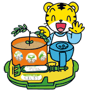
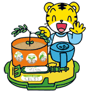

おじぎそう ひろば

※複数回の応募も可能です｡
※ﾍﾞﾈｯｾのｻｲﾄに移動します｡

|
きみだけの おじぎそう ひろば |
|
 |
|
｢種まき記念日｣｢お誕生日(発芽)｣｢ぺこり記念日(初おじぎ)｣の３つの記念日を投稿して､全国の会員とおじぎそうの名前や成長の様子を共有することができます｡投稿いただいた写真の一部は､PC版｢しまじろうひろば｣で紹介させていただきます｡｢ｹｰﾀｲしまじろうひろば｣での発表はありませんので､ご了承ください｡(8/31投稿受付締切) ※複数回の応募も可能です｡ |
|
投稿ﾍﾟｰｼﾞはｺﾁﾗ ※ﾍﾞﾈｯｾのｻｲﾄに移動します｡ |